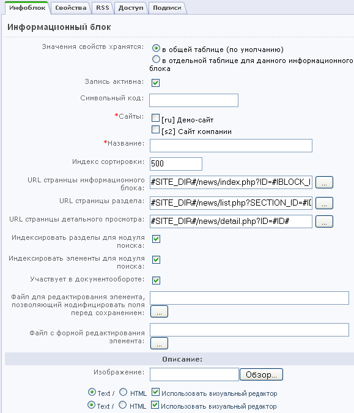
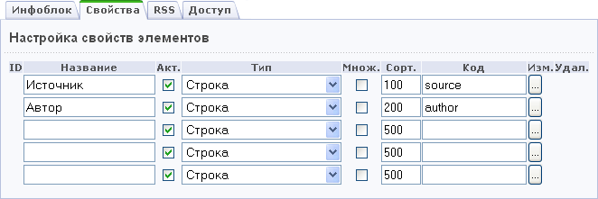

Создание инфоблока новостей
Чтобы создать новый информационный блок типа Новости, выполните следующие действия:
- Откройте страницу типа информационных блоков Новости: Контент > Инфоблоки > Типы инфоблоков.
- Нажмите кнопку Добавить инфоблок на контекстной панели.

- Выберите, где хранить значения свойств инфоблока: в общей таблице или в отдельной.
- Отметьте флажком поле Запись активна, чтобы инфоблок мог быть показан в публичной части сайта.
- Укажите символьный код инфоблока, например, company_news. Символьный код используется при выборе элементов или разделов инфоблока для показа в публичном разделе сайта.
- Выберите сайт, на котором будут публиковаться новости из данного инфоблока.
- Введите название информационного блока, например, Новости компании.
- Укажите индекс сортировки.
- Укажите значения полей URL страницы информационного блока, URL страницы раздела и URL страницы детального просмотра. Для корректного отображения новостей необходимо указать точный адрес страниц, на которых будет показан список новостей (или других элементов информационного блока), точный адрес страницы, на которой будут просматриваться разделы блока новостей, и адрес страницы, на которой будет показан полный текст новости (или другого элемента):
- URL страницы информационного блока:
#SITE_DIR#/about/news/index.php?ID=#IBLOCK_ID#
- URL страницы раздела:
#SITE_DIR#/about/news/list.php?ID=#ID#
- URL страницы детального просмотра:
#SITE_DIR#/about/news/detail.php?ID=#ID#
- Разрешите индексацию разделов и элементов информационного блока для модуля поиска.
- Загрузите изображение для информационного блока. В публичной части изображение будет показано в списке информационных блоков.
- Разрешите участие инфоблока в документообороте.
- Укажите путь до файла, модифицирующего поля формы перед сохранением и путь до файла с формой, если используется кастомизированная форма.
- Если при описании элементов инфоблока будут использоваться свойства, следует создать нужные свойства.
Например, для каждой новости инфоблока Новости компании может быть указан источник и автор. Для этого перейдите на закладку Свойства и создайте свойства Источник и Автор (тип свойств Строка). В результате при добавлении новости вам будет предложено указать значения этих свойств.

- Настройте права групп пользователей на доступ к инфоблоку. Для этого перейдите на закладку Доступ.
- Нажмите кнопку Сохранить, чтобы сохранить новый информационный блок.